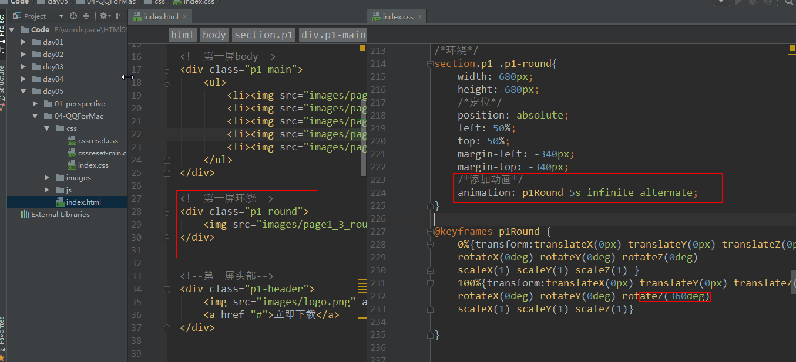
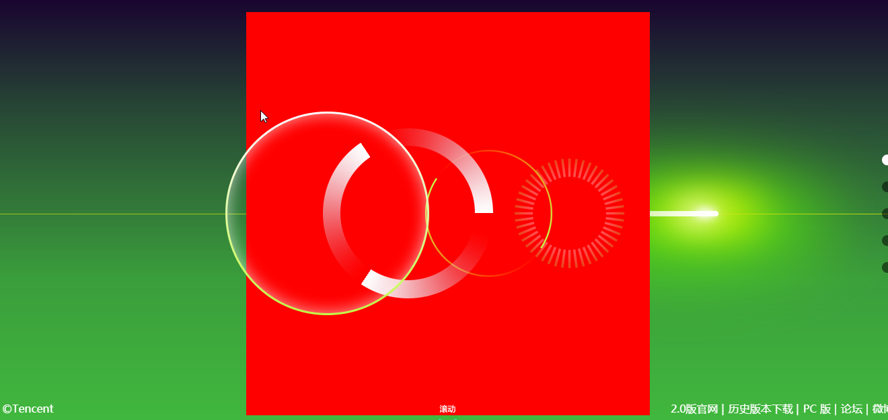

近大远小 ： http://www.w3school.com.cn/cssref/pr_perspective.asp
一旦在父标签设计透视，子标签就会有透视效果
按照y轴旋转
section.p1 .p1-main ul{
animation: p1Cirlce 20s infinite alternate;
}
@keyframes p1Cirlce{
0%{transform:translateX(0px) translateY(0px) translateZ(0px)
rotateX(0deg) rotateY(0deg) rotateZ(0deg)
scaleX(1) scaleY(1) scaleZ(1) }
100%{transform:translateX(0px) translateY(0px) translateZ(0px)
rotateX(0deg) rotateY(360deg) rotateZ(0deg)
scaleX(1) scaleY(1) scaleZ(1)}
}
执行效果：
图片面向前，可见； 背向，不可见
backface-visibility
backface-visibility: visible|hidden;
transform-style
transform-style: flat|preserve-3d;
前面2张图片向前，后3张图片向后（ 在y轴旋转180度 ）

父标签要添加3D效果
在Z轴添加环绕动画
/*环绕*/
section.p1 .p1-round{
width: 680px;
height: 680px;
/*定位*/
position: absolute;
left: 50%;
top: 50%;
margin-left: -340px;
margin-top: -340px;
/*添加动画*/
animation: p1Round 5s infinite linear;
}

圆环倒下效果
圆环切斜效果

添加透视:
/*线条*/
section.p2 .p2-bg span{
height: 1px;
width: 5000px;
background-color: #c7e00e;
/*定位*/
position: absolute;
top: 50%;
left: 0;
/*线条左边小右边大*/
transform:translateX(0px) translateY(0px) translateZ(0px)
rotateX(0deg) rotateY(-10deg) rotateZ(0deg)
scaleX(1) scaleY(1) scaleZ(1);
margin-left: -500px;
}
执行的效果：
注意：nth-child( ) 选中的标签
执行效果：
1.内容布局
执行的效果：

2.里面的li内容定位
section.p2 .p2-main ul li:nth-child(1){
left: 80%;
}
section.p2 .p2-main ul li:nth-child(2){
left: 60%;
}
section.p2 .p2-main ul li:nth-child(3){
left: 50%;
}
section.p2 .p2-main ul li:nth-child(4){
left: 30%;
}
执行效果：

执行效果：
针对每一个li标签执行动画
//all : 默认属性
//1s ：过渡时间
//linear :速度曲线
transition: all 1s linear;
section.p3 .p3-bg img{
/*定位*/
position: absolute;
top: 50%;
left: 50%;
}
section.p3 .p3-bg img:nth-child(1){
margin-top: -555px;
margin-left: -690px;
}
section.p3 .p3-bg img:nth-child(2){
margin-top: -65px;
margin-left: -65px;
}
执行效果：
执行的效果
在Y轴旋 + - 60 度
section.p3 .p3-main ul li{
....
/*轨道*/
border: 1px solid #5ec0ff;
border-radius: 50%;
}
效果：
每一个 li 标签都沿着 Y 轴旋转360 度
section.p3 .p3-main ul li:nth-child(1){
/*transform:translateX(0px) translateY(0px) translateZ(0px)*/
/*rotateX(0deg) rotateY(-80deg) rotateZ(0deg)*/
/*scaleX(1) scaleY(1) scaleZ(1);*/
/*公转*/
animation: p3Cirle1 20s infinite linear;
}
@keyframes p3Cirle1 {
0%{transform:translateX(0px) translateY(0px) translateZ(0px)
rotateX(0deg) rotateY(-60deg) rotateZ(0deg)
scaleX(1) scaleY(1) scaleZ(1);}
100%{transform:translateX(0px) translateY(0px) translateZ(0px)
rotateX(0deg) rotateY(300deg) rotateZ(0deg)
scaleX(1) scaleY(1) scaleZ(1);}
}
section.p3 .p3-main ul li:nth-child(2){
/*transform:translateX(0px) translateY(0px) translateZ(0px)*/
/*rotateX(0deg) rotateY(0deg) rotateZ(0deg)*/
/*scaleX(1) scaleY(1) scaleZ(1);*/
/*公转*/
animation: p3Cirle2 20s infinite linear;
}
@keyframes p3Cirle2 {
0%{transform:translateX(0px) translateY(0px) translateZ(0px)
rotateX(0deg) rotateY(0deg) rotateZ(0deg)
scaleX(1) scaleY(1) scaleZ(1);}
100%{transform:translateX(0px) translateY(0px) translateZ(0px)
rotateX(0deg) rotateY(360deg) rotateZ(0deg)
scaleX(1) scaleY(1) scaleZ(1);}
}
section.p3 .p3-main ul li:nth-child(3){
/*transform:translateX(0px) translateY(0px) translateZ(0px)*/
/*rotateX(0deg) rotateY(80deg) rotateZ(0deg)*/
/*scaleX(1) scaleY(1) scaleZ(1);*/
/*公转*/
animation: p3Cirle3 20s infinite linear;
}
@keyframes p3Cirle3 {
0%{transform:translateX(0px) translateY(0px) translateZ(0px)
rotateX(0deg) rotateY(60deg) rotateZ(0deg)
scaleX(1) scaleY(1) scaleZ(1);}
100%{transform:translateX(0px) translateY(0px) translateZ(0px)
rotateX(0deg) rotateY(420deg) rotateZ(0deg)
scaleX(1) scaleY(1) scaleZ(1);}
}
每个li 标签 在 X 轴旋转 75 度
section.p3 .p3-main ul li:nth-child(1) img{
/*自转*/
animation: p3Round 4s infinite linear;
}
section.p3 .p3-main ul li:nth-child(2) img{
/*自转*/
animation: p3Round 5s infinite linear;
}
section.p3 .p3-main ul li:nth-child(3) img{
/*自转*/
animation: p3Round 3s infinite linear;
}
@keyframes p3Round {
0%{transform:translateX(0px) translateY(0px) translateZ(0px)
rotateX(0deg) rotateY(0deg) rotateZ(0deg)
scaleX(1) scaleY(1) scaleZ(1);}
100%{transform:translateX(0px) translateY(0px) translateZ(0px)
rotateX(0deg) rotateY(0deg) rotateZ(360deg)
scaleX(1) scaleY(1) scaleZ(1);}
}
效果：
标题沿着 Y 轴旋转 -40 度 ； 沿着 X 轴旋转 10 度
效果：
效果：

执行效果：
ul在X轴旋转45度

效果：
ul 添加3D特效
transform-style
transform-style： preserve-3d
li在Z轴分层 ， 父标签要添加3D效果
效果：
效果：
在x轴旋转30度， 放大1.2倍
标签从左边进来 ， 标题从右边进来， 中间内容落空
执行的效果：
效果：

效果：
1.第一张图的背景
section.p5 .p5-main ul li:nth-child(1){
width: 305px;
height: 305px;
position: absolute;
left: 50%;
top: 50%;
margin-left: -150px;
margin-top: -150px;
background: url("../images/page5_bubble_glow.png");
}
2.第二张图的背景
section.p5 .p5-main ul li:nth-child(2){
width: 200px;
height: 200px;
position: absolute;
left: 35%;
top: 35%;
margin-left: -150px;
margin-top: -150px;
background: url("../images/page5_bubble.png");
background-size: cover;
}
执行效果：
3.第三张图的背景
section.p5 .p5-main ul li:nth-child(3){
width: 250px;
height: 250px;
position: absolute;
left: 25%;
top: 90%;
margin-left: -150px;
margin-top: -150px;
background: url("../images/page5_bubble.png");
background-size: cover;
}
4.第四张图的背景
section.p5 .p5-main ul li:nth-child(4){
width: 180px;
height: 180px;
position: absolute;
left: 95%;
top: 90%;
margin-left: -150px;
margin-top: -150px;
background: url("../images/page5_bubble.png");
background-size: cover;
}
5.第五张图的背景
section.p5 .p5-main ul li:nth-child(5){
width: 120px;
height: 120px;
position: absolute;
left: 75%;
top: 45%;
margin-top: -150px;
background: url("../images/page5_bubble.png");
background-size: cover;
}
6.第六张图的背景
section.p5 .p5-main ul li:nth-child(6){
width: 90px;
height: 90px;
position: absolute;
left: 90%;
top: 55%;
margin-top: -150px;
background: url("../images/page5_bubble.png");
background-size: cover;
}
执行的效果：
7.最后一张图片缩小
记住： 1. 要添加动画过渡类 ; 2. 标签和标题旋转坐标在右下角( 100% , 100% )
记住： 要给li标签添加动画过渡类
//x轴坐标(-1000, 0 )
.p5.current .p5-main ul li:nth-child(1){
transform:translateX(-1000px) translateY(0px) translateZ(0px)
rotateX(0deg) rotateY(0deg) rotateZ(0deg)
scaleX(1) scaleY(1) scaleZ(1);
}
//x轴坐标(-1000,-1000)
.p5.current .p5-main ul li:nth-child(2){
transform:translateX(-1000px) translateY(-1000px) translateZ(0px)
rotateX(0deg) rotateY(0deg) rotateZ(0deg)
scaleX(1) scaleY(1) scaleZ(1);
}
//x轴坐标(-1000,400)
.p5.current .p5-main ul li:nth-child(3){
transform:translateX(-1000px) translateY(400px) translateZ(0px)
rotateX(0deg) rotateY(0deg) rotateZ(0deg)
scaleX(1) scaleY(1) scaleZ(1);
}
//x轴坐标(1000, 900)
.p5.current .p5-main ul li:nth-child(4){
transform:translateX(1000px) translateY(900px) translateZ(0px)
rotateX(0deg) rotateY(0deg) rotateZ(0deg)
scaleX(1) scaleY(1) scaleZ(1);
}
//x轴坐标(1000, -1000)
.p5.current .p5-main ul li:nth-child(5){
transform:translateX(1000px) translateY(-1000px) translateZ(0px)
rotateX(0deg) rotateY(0deg) rotateZ(0deg)
scaleX(1) scaleY(1) scaleZ(1);
}
//x轴坐标(10000,-300)
.p5.current .p5-main ul li:nth-child(6){
transform:translateX(1000px) translateY(-300px) translateZ(0px)
rotateX(0deg) rotateY(0deg) rotateZ(0deg)
scaleX(1) scaleY(1) scaleZ(1);
}